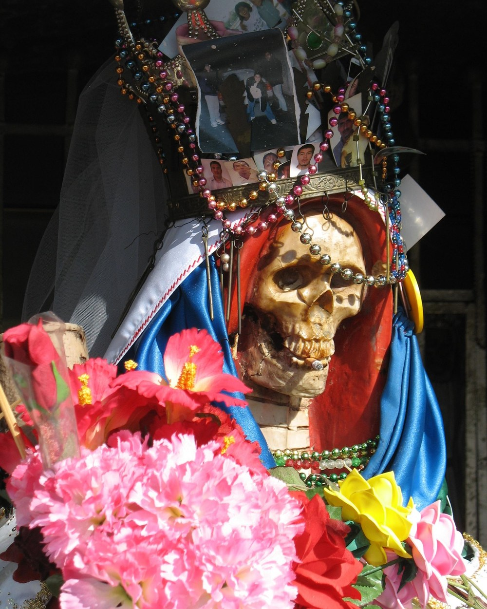
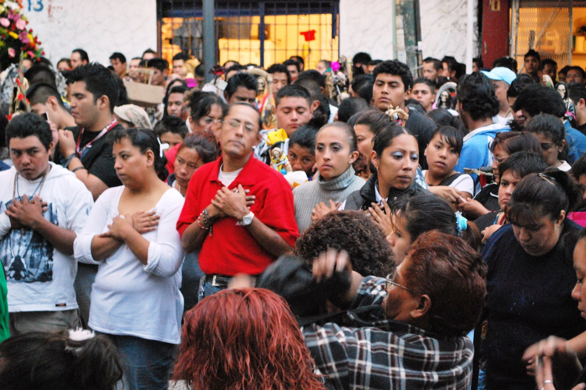

Religiosidade popular · México · História & antropologia
Santa Muerte
Morte, proteção e religiosidade popular mexicana
Entre devoção, marginalização e controvérsia, Santa Muerte tornou-se um dos fenômenos de religiosidade popular mais visíveis do México contemporâneo.
Nesta página
Santa Muerte em 1 minuto
O que é?
Personificação feminina da morte venerada como figura religiosa popular.
Onde?
Principalmente no México, com expansão transnacional e presença em comunidades migrantes.
É santa católica oficial?
Não. A devoção existe fora do sistema oficial de canonização e culto da Igreja Católica. [6]
Fundador?
Não há fundador histórico único demonstrado nem autoridade central universal.
Escritura única?
Não existe texto canônico único que organize toda a devoção.
Pedidos recorrentes
Proteção, saúde, trabalho, amor, justiça e segurança aparecem com destaque na literatura recente. [1]
Santa Muerte não é uma pessoa histórica
Diferentemente de figuras religiosas cuja biografia precede a veneração, Santa Muerte é uma personificação religiosa da morte. O que pode ser reconstruído historicamente é a evolução de sua imagem, práticas, altares, redes de devotos e visibilidade pública.
Regra metodológica: perguntar “quando nasceu Santa Muerte?” é menos preciso do que perguntar quando determinadas imagens, práticas e formas de devoção aparecem nas fontes.
Uma origem em camadas
A genealogia da devoção não cabe em uma linha única. Pesquisadores discutem combinações de história mexicana, iconografia europeia da morte, tradições católicas populares, experiências coloniais e reinterpretacões posteriores. [2]
Mesoamérica
Sociedades mesoamericanas possuíam cosmologias próprias relacionadas à morte e ao pós-morte. Isso forma parte do contexto histórico mexicano, mas não prova uma linhagem direta de uma divindade específica até Santa Muerte.
●○○ Origem direta: limitada/debatidaColonização espanhola
Representações europeias da morte, cristianização e tradições locais entram em processos de conflito, tradução religiosa e transformação.
●●○ Reconstrução históricaReligiosidade popular
Práticas domésticas, devoções não institucionalizadas e personificações da morte passam a compor um ambiente religioso mexicano próprio.
●●○ Evidência moderadaDevoção contemporânea
No fim do século XX e início do XXI, a devoção ganha maior visibilidade pública, circulação midiática e atenção acadêmica. [3]
●●● Evidência forte- Mesoamérica
Contextos anteriores à conquista
Diferentes cosmologias mesoamericanas elaboram relações próprias com morte, ancestrais e pós-morte.
- Séculos XVI–XVIII
Colonização e transformação religiosa
Catolicismo europeu, repressão colonial e tradições locais alteram profundamente o campo religioso.
- Séculos XIX–XX
Devoções pouco visíveis
Práticas domésticas e não institucionalizadas deixam um registro histórico fragmentário, o que recomenda cautela com cronologias excessivamente precisas.
- Década de 1990
Crescente visibilidade
A literatura etnográfica identifica crescimento da visibilidade no México e nos Estados Unidos a partir de meados da década. [3]
- 2001
Tepito e a exposição pública
O altar público de Enriqueta Romero, em Tepito, torna-se um marco importante da presença contemporânea nas ruas. O INAH registra outubro de 2001 como momento decisivo desse processo. [5]
- Século XXI
Como a morte ganha uma forma religiosa
A figura esquelética é central, mas seus objetos não possuem um “dicionário universal”. Significados variam entre altares, devotos, autores e contextos.

Esqueleto
Expõe a mortalidade sem disfarce e aproxima a figura de tradições de personificação da morte.
Foice
Objeto tradicional da iconografia europeia da morte; interpretações devocionais podem associá-la também a corte, proteção ou transformação.
Balança
Quando presente, pode ser relacionada a justiça, equilíbrio e imparcialidade.
Globo
Pode representar alcance ou universalidade da morte.
Ampulheta
Tempo, finitude e passagem da vida.
Túnica
Aproxima visualmente a figura de formas santorais e de outras imagens de devoção popular.
Pedir vida à Morte
O paradoxo central da devoção é antropologicamente importante: uma personificação explícita da mortalidade é procurada para lidar com necessidades concretas da vida. Pansters resume o fenômeno como busca por uma vida melhor em saúde, trabalho, amor, justiça e segurança. [1]
Proteção
Segurança pessoal e familiar diante de situações percebidas como perigosas.
Saúde
Pedidos diante de doença, cuidado, recuperação e incerteza.
Trabalho
Emprego, comércio, estabilidade e oportunidades econômicas.
Amor
Relacionamentos, reconciliação e vida afetiva.
Justiça
Conflitos, reparação e situações consideradas injustas.
Segurança
Proteção social e existencial em contextos de precariedade.
“Santa Muerte não é procurada apenas porque as pessoas pensam na morte. É procurada porque precisam continuar vivendo.”
Altares
Espaços domésticos, comerciais e públicos tornam a relação devocional material e cotidiana.
Orações
Pedidos e agradecimentos estruturam relações de intimidade e reciprocidade.
Velas
Cores e usos podem receber significados específicos, sem padronização universal.
Oferendas
Flores, alimentos, bebidas, cigarros e outros objetos podem aparecer em altares e promessas.
Uma devoção das margens — mas não apenas delas
Estudos etnográficos descrevem devotos em contextos diversos: famílias, trabalhadores, comerciantes, migrantes, presos, minorias e pessoas expostas a diferentes formas de vulnerabilidade. Essas categorias não formam um perfil obrigatório do devoto. [4]

Santa Muerte e criminalidade
A associação pública existe e precisa ser explicada. O erro começa quando uma presença real em determinados meios é convertida em definição da religião inteira.
Sim.
Pessoas envolvidas com crime organizado e outras atividades ilícitas também podem ser devotas; essa presença ajudou a moldar a imagem pública do culto. [3]
Não.
A etnografia mostra práticas de proteção, cuidado, família e vulnerabilidade que não podem ser reduzidas a uma “narco-cultura” coerente. [4]
Alguns criminosos são devotos ≠ todos os devotos são criminosos ≠ a devoção existe para promover crime
O que a pesquisa sustenta — e o que ela não sustenta
Há debate sobre continuidades indígenas, mas a genealogia conhecida envolve múltiplas camadas históricas. [8]
A literatura etnográfica documenta uma comunidade socialmente muito mais diversa. [4]
Trata-se de santidade popular/vernacular, fora do reconhecimento oficial católico. [6]
Não há fundador único estabelecido historicamente.
Tepito em 2001 é amplamente tratado como marco dessa transformação contemporânea. [5]
Proteção aparece de forma recorrente em estudos etnográficos e sínteses recentes. [1] [4]
Igreja, Estado e mídia: quem define o significado de uma religião?
Igreja
Questão: legitimidade religiosa.
A devoção apropria linguagens e formatos familiares ao catolicismo popular, mas existe fora do controle institucional da Igreja. [6]
Estado
Questão: organizações, segurança e reconhecimento.
Ações contra indivíduos ou organizações específicas não equivalem a demonstrar que a crença em si seja criminosa.
Mídia
Questão: enquadramento.
Caveiras, violência e narcotráfico oferecem imagens sensacionalistas que podem ocultar práticas ordinárias de proteção, família e trabalho.
Estamos observando aquilo que os devotos realmente fazem e dizem — ou apenas aquilo que instituições externas dizem sobre eles?
Repressão, oposição e estigmatização
Este fluxo é didático: não pressupõe uma única linha causal contínua entre repressões coloniais e controvérsias contemporâneas.
Santa Muerte como janela para religião e sociedade
História
Permite acompanhar transformações da religiosidade popular mexicana.
Antropologia
Mostra religião como prática cotidiana e relação social, não apenas doutrina.
Sociologia
Ajuda a estudar vulnerabilidade, exclusão, segurança e pertencimento.
Ciência da religião
Oferece um caso de devoção descentralizada e em rápida transformação.
Estudos culturais
Mostra como símbolos recebem novos significados em diferentes períodos.
Alfabetização midiática
Permite comparar descrição etnográfica e representação sensacionalista.
Prioridade alta
- origem e evolução
- experiência dos devotos
- proteção e vulnerabilidade
- criminalidade × estigma
- conflito institucional
Complementar
- iconografia
- cores
- altares
- velas
- oferendas
Não deve dominar
- “feitiços” de internet
- listas de poderes
- curiosidades sem fonte
- celebridades supostamente devotas
- narcotráfico como eixo único
Termos para navegar pela literatura
Santa Muerte
Personificação feminina da morte cultuada em formas de religiosidade popular mexicana.
Devoto/a
Pessoa que estabelece uma relação religiosa com Santa Muerte.
Tepito
Bairro da Cidade do México associado a um dos mais conhecidos altares públicos contemporâneos.
Altar
Espaço material no qual imagens, velas, oferendas e pedidos podem organizar a devoção.
Religiosidade popular
Categoria acadêmica empregada para estudar práticas religiosas desenvolvidas fora ou nas margens de estruturas institucionais formais.
Como esta página classifica afirmações
Múltiplas fontes acadêmicas ou documentais convergem.
Há documentação relevante, mas interpretações específicas permanecem discutidas.
Cadeia histórica incompleta, poucos registros ou hipótese disputada.
Crença ou relato de devotos, apresentado sem converter a afirmação sobrenatural em conclusão científica.
Para continuar investigando
A bibliografia prioriza sínteses acadêmicas recentes, etnografia, história e fontes institucionais mexicanas.
[1] Wil G. Pansters — Santa Muerte Devotion: Vulnerability, Protection, Intimacy (2025)
Síntese da Cambridge University Press sobre proteção, saúde, trabalho, amor, justiça, segurança, intimidade devocional, gênero, família e vulnerabilidade.
Consultar fonte[2] R. Andrew Chesnut — Devoted to Death, 3ª ed. (2025)
Terceira edição da monografia sobre história, iconografia, expansão e práticas contemporâneas.
Consultar fonte[3] Laura Roush — Santa Muerte, Protection, and Desamparo (2014)
Etnografia de um altar na Cidade do México; discute proteção, desamparo e a impressão pública de uma “narco-cultura” coerente.
Consultar fonte[4] Regnar Albæk Kristensen — La Santa Muerte in Mexico City (2015)
Estudo sobre altares, ambiguidades sociais, circulação urbana e transformação pública da devoção na Cidade do México.
Consultar fonte[5] INAH — La Santa Muerte hoy: imagen personificada, dones e iniciación
O Instituto Nacional de Antropología e Historia registra a decisão de Enriqueta Romero, em outubro de 2001, de colocar o altar de Tepito no espaço público.
Consultar PDF[6] Oxford Academic — Undocumented Saints
Discussão sobre santidade vernacular mexicana e devoções não reconhecidas oficialmente pela Igreja Católica, incluindo Santa Muerte.
Consultar fonte[7] Wil G. Pansters (org.) — La Santa Muerte in Mexico: History, Devotion, and Society
Coletânea acadêmica dedicada à história, práticas, sociedade e múltiplas interpretações da devoção.
Consultar resenha acadêmica[8] Oxford Academic — La Santa Muerte: The Patrona of the Death-Worlds
Análise da Santa Muerte como personificação feminina da morte e discussão de genealogias, santidade popular e circulação entre México e Estados Unidos.
Consultar fonte[9] INAH — Ideas de la muerte en México
Dossiê institucional sobre concepções e representações da morte no México, útil para contextualizar a devoção em um campo cultural mais amplo.
Consultar PDF[10] INAH — Congregación Nacional de la Santa Muerte
Estudo sobre formas de organização contemporânea e institucionalização parcial da devoção a partir dos anos 2000.
Consultar fonte[11] Oxford Academic — Purple Candle: Healing
Capítulo da terceira edição de Devoted to Death dedicado ao paradoxo da morte como figura de cura e proteção.
Consultar fonte[12] Cambridge — Elements in New Religious Movements
Registro editorial que confirma publicação online de Santa Muerte Devotion em fevereiro de 2025.
Consultar catálogo[13] Wikimedia Commons — oração em Tepito, 2009
Fotografia de Thelmadatter, CC BY-SA 3.0, mostrando pessoas em oração durante celebração dedicada à Santa Muerte.
Ver imagem[14] Wikimedia Commons — imagem devocional perto de Nuevo Laredo, 2007
Fotografia em domínio público utilizada na seção de iconografia.
Ver imagem[15] Wikimedia Commons — celebração em Tepito, 2018
Fotografia de Karen Melo, CC BY-SA 4.0, usada no hero e na imagem Open Graph.
Ver imagem[16] Cambridge — front matter de Santa Muerte Devotion (2025)
Metadados editoriais da obra de Pansters, incluindo série, título e data de publicação.
Consultar PDFUma devoção que revela mais sobre a vida do que a imagem sugere
Santa Muerte é mais bem compreendida quando separamos iconografia, história, experiência dos devotos, estigma e crença. A figura da morte pode parecer o centro visual da tradição, mas a pesquisa mostra que proteção, saúde, trabalho, afeto, justiça, segurança e pertencimento são fundamentais para compreender por que a devoção cresceu.
Estudar Santa Muerte criticamente significa perguntar não apenas “o que essa imagem representa?”, mas também quem a procura, em quais condições, que instituições a julgam e quais evidências sustentam cada narrativa sobre sua origem e significado.